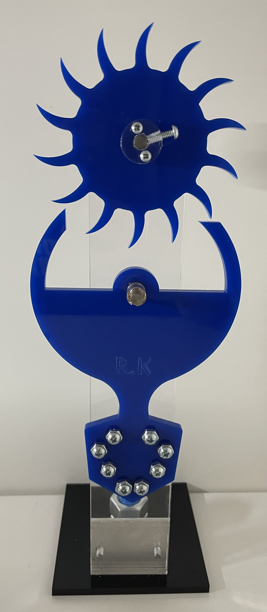
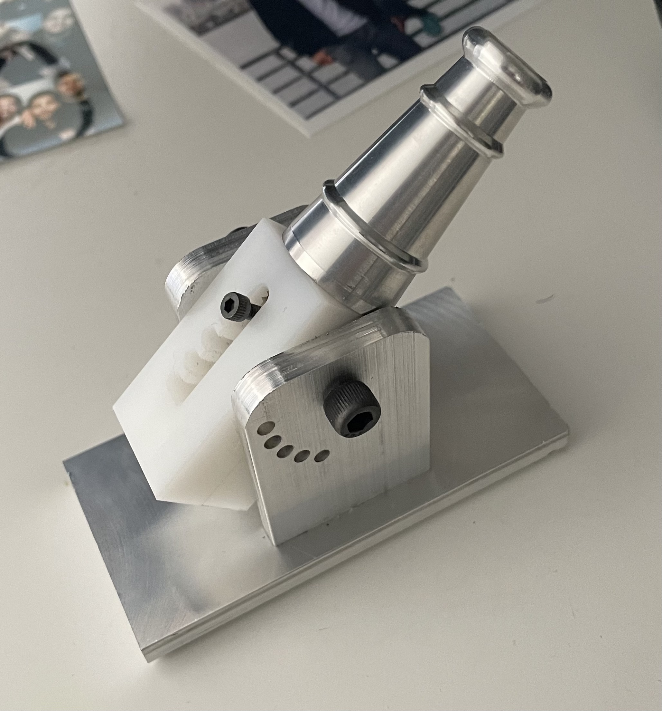

Designed and built a 1/8-scale autonomous vehicle, focusing on system integration and robotics navigation. Achieved a 25% improvement in obstacle detection accuracy through machine learning integration and increased autonomous navigation accuracy by 30%.
Photo of the Autonomous Car
Video of Autonomous Car in action, completing 3 autonomous laps
Robot Contest – Smart Locker Design
Engineered a dual L-shaped hook system and an elevator pulley mechanism, leading a team in a university contest to design a space-saving robot, which improved transport efficiency by 40%.
Smart Locker Robot designed for efficiency
Clock Design and Fabrication
Engineered and built a precision clock mechanism as a demonstration of mechanical engineering principles and timekeeping accuracy. This project highlighted my skills in design, machining, and assembly of intricate mechanical components.

Photo of the Precision Clock Mechanism
Video of Clock Functioning
Cannon Fabrication
Applied hands-on machining techniques to design and fabricate a functional cannon, enhancing practical knowledge in machining, tolerancing, and material properties.

Photo of the Completed Cannon
Video of Cannon Machining Process
Wooden Pen Fabrication
Crafted a custom wooden pen using a wood lathe, demonstrating fine craftsmanship and precision machining.
Analyzed and predicted user ratings for recipes using machine learning, handling data from over 83,000 recipes and 730,000 user interactions to uncover insights and improve prediction accuracy.